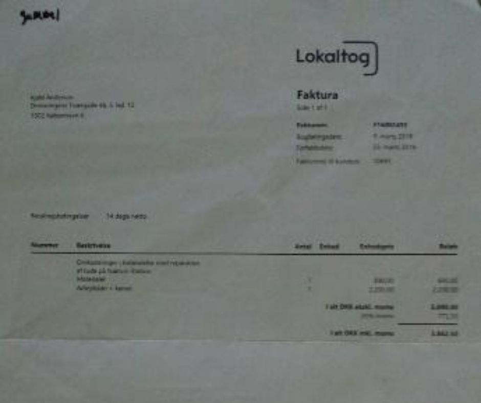

Uacceptable forhold på Glostrup Hospital og Rigshospitalet
"Kære Jess V. Laursen
Jeg skriver til dig for at gøre opmærksom på de helt uacceptable forhold, jeg har oplevet
på Glostrup Hospital (FIUNIT/Klinisk Fysiologisk afdeling) og Rigshospitalet (Onkologisk
afdeling) som læge. Det drejer sig bl.a. om:
Administrativ og finansiel stærk suspekt praksis (“1. Instituttet”).
Grov sløsethed med patienters og forsøgsdeltageres personidentificerbare og fortrolige
sygdomsinformationer
(“Datatilsynet”).
Retssikkerhed og vilkår for yngre læger ansat i Regionen, både i kliniske stillinger og i
forskningsstillinger.
Patientsikkerhed (kemoterapi), Yngre Lægers arbejdsforhold og oplæring (“2. Onkologisk”)
Selv om det måske virker meget uspecifikt, så er der mange helt konkrete eksempler, og
jeg har bestræbt mig på at forklare hvert enkelt af dem.
Fordi forholdene vedrører både Regionen og Universitetet, er jeg havnet i et lovmæssigt
vakuum, hvor hver part undsiger hinanden. Der er mange forhold og det hele er ret
omfattende; derfor har jeg kun været i stand til at præsentere materialet overskueligt
på en hjemmeside:
https://sites.google.com/view/
Hjemmesiden er kun oprettet for at lette tilgængeligheden og overblikket over materialet.
Den indeholder naturligvis ikke malware eller ophavsretsbeskyttet materiale.
Det er selvsagt ubehageligt, at udstille sig selv, men dels har jeg ikke noget valg og
dels er det langt fra kun mig, det handler om. Det handler om kvaliteten af fremtidens
sygehusvæsen i Danmark. Ingen danskere har glæde af, at jeg og mange andre yngre læger
kasseres pga. en arbitrær og meningsløs lov (femårsreglen). Ingen patienter har glæde
af, at deres sygdomsoplysninger havner hos Google, eller at uautoriserede personer har
fuld adgang til alle kliniske oplysninger.
Jeg står naturligvis til rådighed for yderligere oplysninger.
Tak for din tid.
Venlig hilsen,
Læge Kjeld Andersen,
Tlf."
Mail til Signe Flyvbjerg Nielsen v. Center for Sund Aldring
"Kære Signe Flyvbjerg Nielsen v. Center for Sund Aldring
Jeg skriver til dig, for at gøre jer opmærksomme på forhold, der vedrører CESA,
Metropolit-Kohorten, CAMB data, Professor Merete Osler og Professor ML. Jeg tror det er
i alles interesse at I gøres opmærksomme på dette.
Se: https://sites.google.com/view/
Mit bekendtskab med CESA, Professor ML og Professor Merete Osler, samt
Metropolit-Kohorten har været katastrofalt for mig, hvilket fremgår af hjemmesiden.
Jeg håber at ingen nogensinde skal udsættes for de uredelige forhold, jeg har været udsat
for, ingen fondsmidler skal spildes, og at ingen yngre læger skal miste retten til at
blive speciallæge og få ødelagt deres karriere pga. Professor ML.
Hjemmesiden er kun oprettet for at lette tilgængeligheden og overblikket over
materialet. Den indeholder naturligvis ikke malware eller ophavsretsbeskyttet materiale.
Den bliver løbende udbygget med det store materiale, jeg er i besiddelse af, men der
bliver dagligt foretaget online backup af den, således at alle versioner kan genfindes.
Venlig hilsen,
Læge Kjeld Andersen."
Mail til Line Damberg v. Sund Aldring
"Kære Line Damberg v. Center for Sund Aldring
Jeg skriver til dig, for at gøre jer opmærksomme på forhold, der vedrører
Metropolit-Kohorten, CAMB data, Professor Merete Osler og Professor ML. Jeg tror det er
i alles interesse at I gøres opmærksomme på dette. Desuden optræder dit navn på
hjemmesiden, så det mest korrekte er, at informere dig om det. Tænk at du tog løgneren
Egill Rostrup i forsvar. Han har behandlet både forsøgsdeltagerne og ut. ualmindeligt
svinsk og det har haft ødelæggende konsekvenser for mig.
Egill Rostrup var ikke engang ansat af CESA eller på INF. Egill Rostrup har løjet i ét
væk, og den telefonsamtale, jeg på hjemmesiden referer til, vil jeg uploade så snart jeg
får lov.
Den er blot ét af mange beviser på at Egill Rostrup løj og manipulerede. Det er en
skandale, og jeg vil bruge resten af mit liv på at gøre så mange opmærksomme på det, som
muligt. Jeg er allerede i fuld gang, og næste skridt bliver at sende linket til de over
5000 SUND e-mail adresser jeg har “høstet”.
Jeg er ærligt talt ligeglad med, om jeg bliver dømt for at spamme SUNDs medarbejdere, og
når de oplysninger, jeg udspreder er sande, er der ikke tale om injurier. Selv om du har
været venlig og ikke direkte er skyld i noget som helst, så er det stadigt dit ansvar
som projektleder. Intet er værre end min nuværende situation. Det fremgår af hjemmesiden
hvem jeg bl.a. har mailet til eller er på vej til at maile til. Se:
https://sites.google.com/view/
Mit bekendtskab med CESA, Professor ML og Professor Merete Osler, samt
Metropolit-Kohorten har været katastrofalt for mig, hvilket fremgår af hjemmesiden.
Jeg håber, at ingen nogensinde skal udsættes for de uredelige forhold, jeg har været
udsat for, ingen fondsmidler skal spildes, og at ingen yngre læger skal miste retten til
at blive speciallæge og få ødelagt deres karriere pga. Professor ML.
Hjemmesiden er kun oprettet for at lette tilgængeligheden og overblikket over materialet.
Den indeholder naturligvis ikke malware eller ophavsretsbeskyttet materiale. Den bliver
løbende udbygget med det store materiale, jeg er i besiddelse af, men der bliver dagligt
foretaget online backup af den, således at alle versioner kan genfindes.
Venlig hilsen,
Læge Kjeld Andersen."
Mail til Danske Regioner og Region Hovedstaden
"Om uacceptable forhold på Glostrup Hospital (Klinisk Fysiologisk Afdeling) og
Rigshospitalet (Onkologisk Afd.)"
"Kære Danske Regioner og Region Hovedstaden
Min forespørgsel omhandler femårsfristen for læger, såvel som de heraf afledte
konsekvenser. Det handler om, hvordan det er at miste en Ph.d., om at miste retten til
at blive speciallæge, om at blive diskrimineret, fordi man ikke må blive speciallæge,
samt om forskningssnyd, såvel som økonomisk snyd. Jeg har efter bedste evne præsenteret
den ret omfattende sag på følgende hjemmeside:
https://sites.google.com/view/
Jeg skammer mig. Ikke så meget over mig selv, men i højere grad over Lægeforeningen/Yngre
Læger. Det er sørgeligt, at jeg er nødt til at gå til Regionerne før min egen
fagforening. Det er til syvende og sidst fordi Regionerne repræsenterer alle danskere og
Lægeforeningen/Yngre Læger kun repræsenterer de enkelte ansatte de pågældende steder.
Har jeg ikke forsøgt at få hjælp fra Yngre Læger? Se venligst under "Diverse".
Skal fremtidens læger i Danmark være i verdensklasse? Så skal femårsfristen for yngre
læger ophæves. Jeg var så uheldig at være blandt de første under dette åg, og på min
hjemmeside kan du læse om og lytte til, hvilken konsekvenser det har haft. Det er
ubehageligt at udstille sig selv, men dels har jeg ikke noget valg og dels er det langt
fra kun mig, det handler om.
Det handler om kvaliteten af fremtidens sygehusvæsen i Danmark. Ingen danskere har glæde
af at jeg og mange andre yngre læger kasseres pga. en arbitrær og meningsløs lov. Jeg
har intet fagligt lavet i et år - hvem har det gavnet? Jeg holder aldrig op med at gøre
opmærksom på de modbydeligheder, jeg har været udsat for pga. femårsfristen, og jeg
accepterer med glæde de konsekvenser det har.
Jeg ville virkelig blive ked af det, hvis min forespørgsel ikke kan behandles, fordi
materialet ligger på en hjemmeside. Omvendt forstår jeg godt at det er en lidt
ukonventionelt måde at præsentere materialet på, men jeg véd ikke hvordan jeg ellers
skal bære mig af. Jeg kan eventuelt sende udprint af hjemmesiden, men det ville gøre det
vanskeligt at få et overblik. Jeg kan under alle omstændigheder fremsende samtlige
dokumenter.
Tak for jeres tid.
Venlig hilsen,
Læge Kjeld Andersen."
Mail til Datatilsynet
"Kære Datatilsyn
Jeg skal bede om fuld aktindsigt i alle mine henvendelser. Jeg skal understrege, at jeg
mener alle data om mine henvendelser, både elektronisk og ikke-elektronisk. Jeg skal
oplyses om, hvorvidt I nægter mig oplysninger, som I mener ikke er omfattet af
offentlighedsloven.
Især er det vigtigt, at jeg oplyses om tid og dato for samtlige henvendelser, og hvilke
personer, der har varetaget mine henvendelser.
Datatilsynet har undladt at registrere flere af mine henvendelser, hvilket fremgår af
jeres første og eneste respons til mig.
Hvorfor har Datatilsynet ikke registreret alle mine henvendelser?
Jeg har beviseligt tilsendt jer omfattende dokumentation for grove overtrædelser af
persondataloven. I har brugt over 2 år alene på at svare mig, at I ikke har gjort noget
som helst og ikke agter at gøre noget.
Det må således betyde, at jeg har taget fejl, og det materiale, jeg har sendt jer ikke er
udtryk for nogen overtrædelse af loven.
Derfor må jeg formode, at Datatilsynet ikke har noget imod, at jeg uploader alt til min
hjemmeside, som jeg linker til i en mail, som jeg udsender til tusinder af modtagere.
Denne mail ligger jeg også op på hjemmesiden. I kan se hjemmesiden her:
https://sites.google.com/view/.
Den er ikke helt færdig, men arbejdet går støt fremad.
Venlig hilsen,
Kjeld Andersen."
- "Ophør af behandling med antidepressiv medicin er nogle gange forbundet med et
"antidepressivt seponeringssyndrom"1.
- Symptomerne kan være forkølelseslignende, søvnproblemer, kvalme, svimmelhed,
sensoriske forstyrrelser og følelse af "elektriske stød" i hovedet."
Fra Sundhed.dk: Antidepressivt
seponeringssyndrom, den 11. august 2020.
Det var vinteren 2015/2016, og rigtigt koldt. Det var første gang jeg mistede min
lejlighed, men så nåede jeg i
ellevte time lige akkurat at aftale en ordning med boligselskabet, så jeg kunne beholde
den (indtil dét uomgåeligt
sluttede, da jeg blev tvunget til at flytte d. 20 juni 2016).
Jeg havde ingen penge og jeg havde i en længere periode levet af små-beløb jeg lånte af
mine forældre. Idet
pengene ikke rakte til at jeg kunne købe tilstrækkeligt med mad, måtte jeg supplere de
nedsatte, næsten-for-gamle
madvarer fra Netto med at cykle fra Indre By til forstaden for at få aftensmad hos
forældrene. En dag var det
essentielt at jeg fik nogle fornødenheder, og jeg mente, at jeg havde snyltet nok af
mine forældre. Derfor fik jeg
aftalt med en bekendt nord for København (ca. 45 km), at jeg kunne komme forbi
vedkommende og få
fornødenhederne. Den samlede værdi af disse var vel ca. 20 kr., men jeg havde absolut
ingen penge og det var
ikke lykkedes mig at sælge en rygsæk, jeg engang havde fået af en ven.
Problemet var nu følgende: det var aften. Temperaturen var ca. -10 grader og det blæste
med iskold vind, som stak
som små syle i ansigtet. Jeg var dog i god form (og havde tabt en del kilo) og havde en
let og hurtig carbon
racercykel. Jeg tastede adressen ind på min fuldt opladte iPhone, og jeg medbragte en
ekstra telefon, som også
havde GPS, MEN med et taletidskort i uden én eneste krone i taletid.
Ergo tog jeg varmt cykeltøj på, monterede lygter for og bag, og cyklede afsted. Klokken
var vel 19.00. Jeg kunne i
teorien tage tog og bus, men som før nævnt ejede jeg ikke en eneste krone. Derfor
cyklen. Jeg cyklede ud i den
bidende kolde vinteraften i kraftig modvind. Det gik faktisk meget godt og efter ca. to
timer og tredive minutter var
jeg godt og vel fem kilometer fra min bekendte. Så gik min iPhone ud.
Jeg havde naturligvis sørget for at slukke for de funktioner, jeg ikke havde brug for på
min iPhone; skærmen var på
laveste lysstyrke og jeg havde ikke hørt musik eller lignende på vejen op nord på. Det
var med overvejende
sandsynlighed kulden, der var synderen, præcis som det havde været, både tidligere og
efterfølgende. Jeg havde
nu aldrig oplevet at telefonen afladede så hurtigt.
Jeg stod nu på en øde landevej med marker på den ene side og bebyggelse på den anden. Jeg
havde aldrig været
i området før, og det var første gang jeg skulle besøge min bekendte i vedkommendes eget
hjem; det havde altid
været i Indre By vi havde mødtes. Jeg var kommet relativt hurtigt derop, tæt på målet,
men nu cyklede jeg rundt,
dels på landevej, dels i skov, det var kulsort, sent på aftenen, jeg var udmattet, havde
ikke spist den dag, og i de
foregående dage kun fået utilstrækkeligt med mad. Jeg frøs og var faret vild.
Jeg cyklede rundt i området, men med relativ langsom fart, idet jeg forgæves forsøgte at
få øje på de veje, hvis
navne jeg kunne huske fra kortet. Over en mortorvejsbro, ind i en skov. Tilbage igen. På
et tidspunkt, hvor sveden
for længst var blevet iskold, og mine fødder gjorde modbydeligt ondt, samtidig med at
jeg havde mistet følesansen
i dem, fandt jeg ind til downtown Nærum. Klokken havde passeret 22.00, og jeg kørte ind
på det eneste sted, som
havde åbent, tankstationen overfor stationen. Jeg havde desværre ikke nogen penge, men
ekspedienten var venlig
og gav mig lov til at stå derinde et lille stykke tid. Jeg kunne næsten ikke tale, fordi
ansigtet var frosset. Jeg spurgte
hende om vej, og fik at vide, at jeg var tættere på min destination end jeg havde troet.
Hun forklarede mig, hvordan
jeg skulle cykle for at komme i mål, og jeg steg op på cyklen igen. Ganske som forklaret
på tankstationen, var der omfattende vejarbejde på den del af strækningen jeg var nået
til.
Problemet var, at den bro, jeg skulle over var spærret pga. dette arbejde. Ikke andre
veje, så vidt jeg kunne se. Jeg
var iskold over hele kroppen, især ansigtet, fødder, ben, arme og hænder. Fingrene var
ligesom fødderne stive af
kulde og ubrugelige. Selv om min iPhone havde fungeret, ville jeg ikke kunne betjene
den. Jeg var tiltagende
svimmel og kunne ikke tale.
Jeg cyklede rundt indtil midnat. Jeg havde mistet orienterings- og koncentrationsevnen,
og det var et rent held at
jeg fandt tilbage til tankstationen. Den var imidlertid lukket. Der var fuldstændigt
mennesketomt, ikke engang på
motorvejen kunne jeg se nogen biler. Jeg kunne ikke holde balancen på min cykel, jeg var
nød til at humpe
langsomt afsted. Jeg havde det svært dårligt, og jeg blev klar over at jeg ikke kunne
komme videre, endsige hjem,
med egen hjælp. Det sidste tog var på det tidspunkt kørt, der var seks timer til første
tog ville køre, og jeg vidste at
jeg ikke kunne overleve så lang tid ude i den isnende blæst. Jeg forsøgte forgæves at
ringe nogen op på min
reservemobil, men der var ingen penge på taletidskortet og jeg kunne kun huske to
telefonnumre i hovedet. Min
iPhone var stadig død. Selv hvis jeg have haft en clips, ville jeg med mine følelsesløse
og nu helt ubrugelige fingre
ikke have kunnet flytte sim-kortet over i reserve-mobiltelefonen.
Jeg smed cyklen i en busk på stationen, så vaklede jeg over til venteværelset. Der var
ganske vist tændt lys, men
døren var låst. Alle døre i de forretninger, der lå ved stationen var også låst, det
samme var tilfældet med de
opgangsdøre jeg kunne finde i det lille stationscenter. Jeg gik over den store p-plads
til nogle etageboliger. Ikke lys
i nogen vinduer. Fandt en tilfældig opgang og ringede på hos alle beboerne. Gik et par
meter tilbage, så beboerne
kunne se mig fra deres vinduer. Ingen åbnede for opgangsdøren, så jeg kunne få varmen
dér, om ikke andet.
Tilbage på stationen kunne jeg mærke at jeg havde det svært dårligt. Jeg ringede til et
af de eneste numre, jeg
kunne, fra en telefon uden kredit: 114.
Jeg kunne næsten ikke bevæge de muskler, der normalt artikulerer stemmen. Jeg var nød til
at gentage alt hvad
jeg sagde til dén, der svarede i den anden ende. Jeg forsøgte at forklare min situation
og spurgte hvad jeg kunne
gøre. Jeg sagde, at jeg havde det svært elendigt og i øvrigt ikke havde nogen penge, og
at der ikke var nogen
mennesker i området. Jeg blev viderestillet til Nordsjællands Politi. Betjenten, som jeg
blev viderestillet til mente, at
jeg skulle ringe 1813.
Forfra: ringede op til 1813. En kvinde svarede. Jeg forsøgte igen at forklare hvad, der
var hændt. Måtte gentage alt.
Blev omstillet til en læge, som jeg igen måtte forklare mig overfor. Min stemme lød
sikkert mærkeligt, snøvlende,
kraftesløs. Jeg ansluttede med at sige, at jeg selv var læge, og at jeg mente, at jeg
var i livsfare, og at jeg havde
forsøgt alt, hvad jeg overhovedet var i stand til i min tilstand. Jeg fortalte at der
ikke var nogen mennesker, ingen
der åbnede, når jeg ringede på, ingen taxaer eller busser, og at jeg ikke havde nogen
penge, selv om der
mirakuløst skulle komme en taxa forbi. Lægen fra 1813 grinte blot og sagde: "Jeg troede
ellers at læger tjente nok
til at leje en taxa!". Så sluttede dén samtale. Ringede 114 igen. Blev omstillet til
Nordsjællands Politi igen. Kunne
intet gøre for at hjælpe mig. Jeg måtte ringe 1813 eller 112. Sagde at jeg ikke kunne
mere, og at jeg ville smadre en
rude, så jeg kunne komme ind i læ og varme i venteværelset på stationen. Kan ikke huske
hvordan dén samtale
endte, men jeg kan huske, at jeg fortalte, at jeg faktisk havde forsøgt ALT, hvad jeg
kunne og at det ikke fik
betjenten til at gøre noget som helst.
Tog min cykelkæde og kastede den kraftesløst ind i ruden til venteværelset. Som var lavet
af en slags panserglas,
hvorfor den prellede af uden at efterlade så meget som en ridse. Jeg kunne sådan set
heller ikke kaste den med
særlig meget kraf. Umiddelbart ved siden af venteværelset lå en lille skur-lignende
bygning, med en glasdør og
vinduer vendende samme vej som venteværelset. Samlede kæden op fra jorden og kastede den
mod glasset i
døren. Som den gik direkte igennem.
Jeg havde regnet med (og håbet på) at det ville give anledning til at alarmen blev
aktiveret. Det gjorde den ikke og
der var helt stille på den øde perron. Jeg kunne lige akkurat magte at få hånden igennem
og åbne døren indefra.
Jeg væltede ind i det lille rum, ned på gulvet og hen op ad en tændt radiator. Jeg lå i
ske med radiatoren til jeg
brændte mig på den. Måske tre kvarter, måske en time. Kan meget tydeligt huske dén del
af forløbet. Det var
vidunderligt og jeg faldt næsten i søvn. Dog kun næsten. Jeg havde været helt omtåget
indtil jeg fik varmen. Jeg
kunne ikke styre arme og ben, ikke tale, ikke koncentrere mig og ikke bevæge mig mange
meter. Nu fik jeg det
langsom bedre.
Jeg kan ikke huske om jeg før jeg fik varmen fik ringet 112. Det kan vel ret nemt
eftervises, idet jeg regner med at
alle mine opkald blev registreret hos politi og 1813. Men efter jeg havde ligget
i tre kvarter med viskestykker
viklede rundt om mine fødder, hals og hænder, kom jeg op at sidde og ringede 112. Jeg
forklarede igen hvad der
var sket, og hvad jeg havde gjort.
Efter 20 minutter ankom politiet. Jeg havde lagt mig ad radiatoren igen fordi jeg stadig
frøs. Jeg havde som sagt fortalt
politiet præcis hvad jeg havde gjort og hvilken tilstand jeg var i. Alligevel opførte
specielt den ene betjent sig som
bad ass Rambo - helt utroligt, men han faldt dog til ro. Jeg uddybede min forklaring og
ordensmagten blev enig
om ikke at sigte mig for indbrud, men jeg skulle selvfølgelig betale for skaderne. De
ringede efter en taxa, som
kørte mig og min cykel hjem.
Der var imidlertid ingen, der havde fortalt taxachaufføren, at jeg var flad som en
pandekage, hvad angik finanser.
Mere om dette senere. Jeg var hjemme lidt i 06.00 om morgenen. Uden fornødenheder og
3600 kr. samt taxa
betalingen fattigere. Der gik to dage før jeg kunne gå normalt igen.

Dette billede er taget umiddelbart efter jeg nåede hjem tidligt om morgenen.

Den første regning fra Lokalbanen havde jeg selvsagt ikke råd til at betale.

Den næste regning fra Lokalbanen kunne jeg lige akkurat betale, men det ruinerede mig
desværre også.
Lægernes Bank
Det er forbavsende let at ødelægge en læge i Danmark. Fordi der er så relativt få læger i
vores lille land, er det slet ikke usandsynligt at man som eksempelvis som læge i
Storkøbenhavn, som er uddannet på Københavns Universitet, og måske er blevt specillæge
på Sjælland, kender én eller flere læger der er psykiatere eller embedslæger. Det bedste
ord for fænomenet er "kammarateri".
Jeg har mange eksempler på hvordan jeg er blevet offer for kammarateri, som jeg skal
bringe i bogen, men hvorfor mon psykiater Søren eller psykiater Henrik Jurlander udviste
så ulækker en adfærd? Det har jeg ingen rationelle forklaringer på, udover en mere eller
mindre bevidst hensynstagen til der bekendte, der også var læger. Det kan også være at
det var noget så simpelt som banal magelighed, dovenskab eller ansvarsforflygtigelse,
der betød, at nedenstående kunne fnde sted. Pudsigt nok er det præcis samme problemer,
jeg døjer med i dag, nemlig at jeg ikke har råd til briller eller til at gå til
tandlægen, og at Lægeforeningen og Yngre Læger, som jeg har betalt til i dyre domme,
nægtede og fortsat nægter at hjælpe mig. Man skulle tro, at det netop var deres
eksistensberettigelse, men nej.
Det er desværre ikke kønt at blive kvast af en dyssocial (psykopatisk) praktiserende
læge, hendes veninder, som er embedslæger og et par psykiatere. Jeg er beklageligvis
ikke mere nobel, ædel og høvisk end de fleste andre mennesker, og slet ikke i så høj
grad, som førnævnte læger tror de er. Derfor bærer teksten i bogen ikke præg af, at være
pæn eller selvforhelligende, ligesom jeg ikke bruger så meget som ét sekund på at
omskrive noget som helst, så jeg fremstår i et bedre lys. Sådan er virkeligheden nu
engang, uretfærdig og beskidt, og når ens eksistens er truet som følge af at enkelte
læger har en bundrådden moral, er fagligt inferiøre og udviser "kammarateri", så har man
- og jeg - intet valg end at kæmpe imod. Jeg lægger mig ikke hen i et hjørne for at dø,
som følge af usle menneskers overgreb. Undskyld, ikke undskyld.
Mail til Lægernes Bank
"Det er fuldstændigt urimeligt. Jeg har ingen indkomst, hvilket er påtvunget af
Styrelsen for Patientsikkerhed, der har frataget mig min autorisation. Derfor kan
jeg ikke arbejde. Jeg kunne umuligt vide, at psykiater Henrik Jurlander havde den
generelle holdning, at han ikke ville udfærdige speciallægeerklæringer for sine
patienter.
Jeg ventede en måned på at få en tid hos psykiater Henrik Jurlander, og han var dén, der
havde den først ledige tid. Jeg har mistet min lejlighed i Dronningens Tværgade pga. jeg
har været tvunget til at forlade arbejdsmarkedet og modtage Invalidepension. Det kostede
penge at blive sat på
gaden, og jeg betaler til et mindre lagerrum, hvor mine ejendele står.
Der er ikke meget, jeg kan sælge. Jeg har ingen penge. Jeg må ikke arbejde. Jeg har ikke
råd til at gå til tandlæge
eller få repareret mine briller. Hvis jeg skal finde en ny psykiater, vil det tage
minimum én til to
måneder for at få en tid. Jeg har ikke modtaget nogen ydelse for denne måned.
Skal jeg melde mig ud af Lægeforeningen, så jeg kan få et (andet) arbejde end læge?
Er det rimeligt at jeg skal sættes i en situation, hvor jeg fortsat skal leve (endnu)
lavere end
fattigdomsgrænsen?
Jeg synes, at det er modbydeligt. Jeg er rasende over, at jeg skal behandles så inhumant,
som
om jeg er andenrangsborger eller affald.
Jeg har haft så stort besvær med Lægernes Pensionsbanks vrangvillighed, at jeg næsten
ikke orker længere.
Venlig hilsen/Kind regards
Kjeld Andersen."